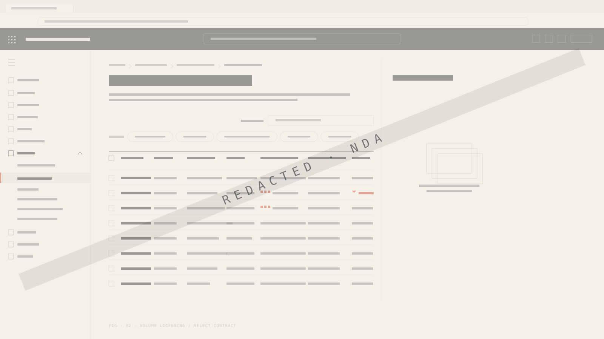
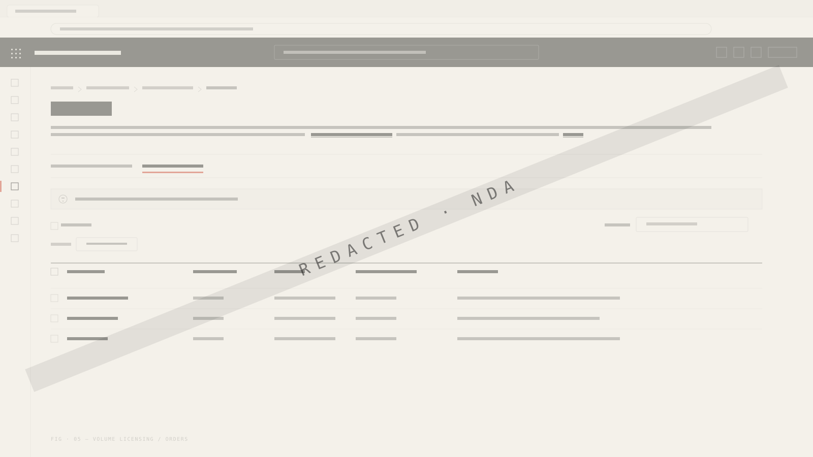

Self-serve orders, built on trust.
For years, enterprise customers depended on partners and sellers to place every order. The path was fragile, slow, and expensive to scale. I redesigned that path into a self-serve experience that customers, partners, and sellers all trust — with parity across EA, Non-EA, Partner, and OSC/ROC channels.

What I built — and why it mattered
Customer Self-Serve Orders moves enterprise customers from a partner-dependent ordering model into a direct, governed flow on the M365 Admin Centre. The work spans Plan of Record, scope of work, end-to-end UX, content, validation, and launch.
Plan of Record
Authored the design POR — covering experience principles, pattern library, success criteria, and trust safeguards. The POR became the contract between PM, Eng, Ops, and Compliance.
Scope of work
Translated platform ambitions into shippable scope. Identified the dozen-or-so trust moments that had to clear bar before we could promise self-serve in writing.
End-to-end ownership
Owned the journey from Order entry → Pricing → Validation → Submission → Status — across EA, Non-EA, Partner, and OSC/ROC paths. Worked with PM, Eng, Ops, and Field on every flow.
Trust, not speed
The reflex with self-serve is to optimise for speed. Get to the “submit” button faster. Reduce clicks. Compress the form. Every metric we cared about — adoption, partner relief, order accuracy — required the opposite. Customers will not self-serve a product they do not trust.
I ran partner cogwalks and seller feedback sessions across geographies. Three patterns surfaced over and over:
- Confirmation, not assumption. Customers wanted to see what they were buying, in their own language and currency, before any commitment.
- Reversibility. A clean exit before submission — no traps, no irreversible state changes — was non-negotiable.
- Visible governance. Approval, tax, and compliance steps had to be present in the surface, not hidden behind a status code.
Self-serve is not a checkout. It is a contract negotiation that the customer happens to drive.



What I designed — and the impact of each decision

Pattern parity across channels
Designed a single pattern set that worked for EA, Non-EA, Partner, and OSC/ROC orders. Customers, partners, and sellers learn one mental model — even though the underlying business rules diverge sharply.
Content as part of the system
Content validation was treated as design work — not copy review. Wrote the trust-bearing strings (price, tax, terms, status) myself, then validated them with partners and sellers before lock.
Specs as a north star
Authored specs that survived after handover. Engineers and PMs kept returning to the same spec months later — a sign the artefact was load-bearing, not ceremonial.
Owned design walkthroughs
I led every major design walkthrough — internal, exec, and with partners. Walkthroughs surfaced edge cases earlier than usability testing alone could.
Faster — without replacing judgement
AI-accelerated methods compressed timelines by roughly 30% across research synthesis, scenario mapping, content validation, and spec drafting. The discipline was to use AI for scale and speed, never for the calls that needed to remain human — quality, ethics, accountability.
Research synthesis
Clustered partner cogwalk transcripts and seller feedback. AI surfaced themes; I validated them against the raw quotes before promoting any to a design driver.
Scenario mapping
Generated edge-case matrices across order types, currencies, geos, and approval states. Used the matrix to stress-test flows in design — not in production.
Content validation
Drafted candidate strings, then ran them through partner and seller voice. Locked the trust-bearing strings last, never first.
Spec & handover drafting
AI drafted specs from designs; I rewrote the load-bearing parts. Saved review cycles without sacrificing precision.
Decisions → measurable outcomes
Decision → Outcome
A unified pattern set across EA, Non-EA, Partner, OSC/ROC.
One mental model for every channel.
Treat content as a design surface — not as copy review.
Trust-bearing strings cleared partner cogwalks at first read.
Owned end-to-end design walkthroughs across every channel.
Edge cases surfaced before code, not after launch.
Compressed research and content cycles with AI methods.
From research → ship cycle in fewer weeks, without quality loss.
Enterprise UX is not consumer checkout
Consumer checkout is a 90-second optimisation problem. Enterprise self-serve is a multi-stakeholder negotiation, conducted in a UI, between a customer, a partner, a seller, and a compliance regime. The patterns are different. The tolerance for ambiguity is zero.
The work shipped because we treated trust as the product, content as design, and scale as a constraint we designed within from day one.
If self-serve is a contract, every screen is a clause. Design it like one.
Orders — the design process
A 6-phase walk through how the work was made: discovery, synthesis, architecture, patterns, validation, and handover.
Commerce Insights — Decision System
Reframing an enterprise seller dashboard from reporting surface into action-driven decision system.